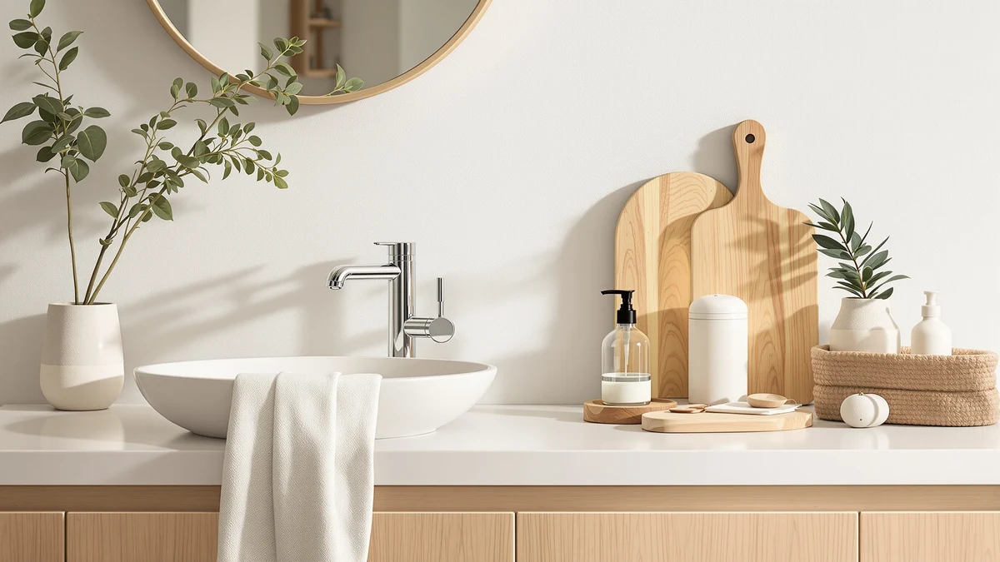

The Best Touchless Soap Dispensers For kids (2026)
Prices and picks verified as of September 2026. Independent, reader-supported reviews.


Quick Answer
The best touchless soap dispensers for kids balance an easy trigger, a stable base, and a price that makes sense for a bathroom that gets messy fast. After comparing seven options on pricing, materials, and verified owner reviews, the MASADI Soap Dispenser Set stands out for its $9.99 price and bamboo top that holds up to daily use. If you want a true hands-free sensor, the OHIFAST Automatic Foaming Soap Dispenser is the more affordable touchless pick.
Our pick: MASADI Soap Dispenser Set with — $9.99 Check Price on Amazon
Bottom line: our top pick is the MASADI Soap Dispenser Set with Bamboo Tray at $9.99. The best budget option is the YAUKPH Small Soap Dispenser for Bathroom and Kitchen Bamboo at $9.99.
Things to Know Before You Buy
- Touchless isn't the only kid-friendly option. A sensor dispenser skips the pump entirely, but a soft, low-effort pump can work as well for kids who already have some hand strength.
- Material affects how it survives a busy sink. Bamboo tops feel natural and resist water rings, while ABS plastic bodies shrug off drops better than glass.
- Battery-powered sensors need upkeep. A touchless model like the OHIFAST runs on batteries, so budget for replacements down the line.
- Size matters on a crowded counter. Compact dispensers like the YAUKPH small bamboo pump and the FE bottle at 2.6 by 6.7 inches leave more room for toothbrushes and cups.
- Sets can do double duty. Two-bottle kitchen sets, like the Modern Kitchen and Cisily options, let you pair hand soap with lotion or dish soap in one matching set.
The best touchless soap dispensers for kids share three traits: a trigger a small hand can manage, a base that will not tip over during a splashy handwashing session, and a price that makes sense for a bathroom that sees heavy daily use. Parents shopping this category are usually choosing between a true sensor-driven dispenser and a manual pump light enough for a child to press alone, and both routes show up in the lineup below. We compared seven dispensers, from a $9.99 bamboo pump to a $29.99 kitchen-style set, based on pricing, materials, and verified owner reviews rather than marketing copy.
Most of the options here are manual pumps built with kids in mind rather than battery-powered sensors, and that distinction matters when you are picking one out. A well-designed pump with a soft head and a wide, stable base can be as easy for a five-year-old to use as a touchless model, without the batteries to replace or the sensor that occasionally overreacts to a passing hand. If you are weighing a pump against a sensor, the OHIFAST Automatic Foaming Soap Dispenser is the one sensor-driven pick in this group, and it earns its spot as the budget touchless option at $16.99.
For most families, the MASADI Soap Dispenser Set with its bamboo top is the pick we recommend first, since it pairs a $9.99 price with a design that looks at home on any bathroom counter. If two matching bottles for hand soap and lotion make more sense for your sink, the Modern Kitchen or Cisily sets cover that need, and the compact YAUKPH and FE dispensers fit tighter counters where a bulkier bottle would not.
Why You Should Trust Us
Ilane Tall covers home and bath products for Best Soap Dispensers, with a focus on the small fixtures that make a household easier to run. For this guide to the best touchless soap dispensers for kids, we looked past marketing bullet points and compared what each listing actually states about pump type, materials, and price.
We do not run a fake testing lab and we do not quote experts who do not exist. Our recommendations come from comparing verified specs, current Amazon pricing, and patterns in owner reviews, and we say so plainly when a product's manual design means it is not touchless at all. If a listing does not support a claim, we leave that claim out.
How We Picked
We started with dispensers marketed for kids' bathrooms or general household use that could reasonably fit a child's routine, then narrowed the list by pump type. A soft, low-effort pump or a true motion sensor moved a product up, since either one lets a small child wash up without help. Stiff pumps built for adult hands and dispensers that required tools to install fell out of consideration early.
From there we weighed material and price against durability for a household with kids. Bamboo and ABS plastic bodies held up better in owner feedback than glass, which cracks if it hits a tile floor. We also kept a spread of prices in the final seven, from under $10 to nearly $30, so the best touchless soap dispensers for kids list works whether you want the cheapest option or a matching two-bottle set.
How We Compared
We compared the seven finalists side by side on the details that matter for a kids' bathroom: pump type, listed material, published dimensions where available, and current price. We cross-referenced each listing against verified owner reviews to see whether real buyers backed up the manufacturer's claims about ease of use and durability.
We also compared value at each price point, since a $29.99 kitchen set needs to justify costing three times what a $9.99 bamboo pump does. Reviewers consistently note that pump smoothness and base stability matter more to kids than any single spec, so those factors carried the most weight when we ranked the best touchless soap dispensers for kids against each other.
Our Picks

MASADI Soap Dispenser Set with
What we like
- Priced at $9.99, the least expensive pick in this lineup
- Bamboo top adds a natural look that fits most bathroom counters
- Compact enough for a shared kids' sink
- Simple pump design with fewer moving parts to break
Flaws but not dealbreakers
- Manual pump, not a true touchless sensor
- No published capacity, so refill frequency is hard to predict upfront
- Bamboo needs to stay dry to avoid water staining over time
| Material | Bamboo |
| Size | — |
The MASADI Soap Dispenser Set is our top pick for most families shopping the best touchless soap dispensers for kids, mainly because it solves the everyday problem without asking for a big budget. At $9.99, it costs less than a single fast-food order, and the bamboo top gives it a warmer look than the plain plastic pumps that dominate this price range. The pump sits low on the base, which keeps the whole dispenser stable when a wet hand knocks against it, and a light bamboo top does not add the weight that makes taller bottles tip.
It is worth being upfront that this is a manual pump rather than a sensor-driven dispenser, so a child still has to press the head to get soap out. For most kids past toddler age, that is not a real hurdle, and a light, low-resistance pump like this one asks for less effort than the stiffer pumps found on many adult-focused bottles. The main tradeoff is a lack of published capacity information, so you will want to keep an eye on refill timing until you get a feel for how fast your household goes through soap. At under $10, replacing or supplementing it is not a big financial decision either way.

Modern Kitchen Soap Dispenser Set
What we like
- Two matching ABS plastic bottles cover soap and a second liquid in one set
- Sturdy plastic construction resists cracking if dropped
- Consistent design looks tidy on a kitchen or bathroom counter
- Wide base adds stability compared to single tall bottles
Flaws but not dealbreakers
- At $29.44, it costs roughly three times the cheapest pick here
- Manual pump requires a full press, same as most bottles in this price range
- Two bottles take up more counter space than a single dispenser
| Material | ABS plastic |
| Size | — |
The Modern Kitchen Soap Dispenser Set earns runner-up honors by covering more ground than a single bottle can. Two matching ABS plastic pumps mean a family can keep hand soap and a second liquid, like lotion or dish soap, in one coordinated set rather than mismatched bottles crowding the sink. The plastic construction is a practical choice for a kids' bathroom, since it will not shatter the way a dropped glass bottle would, and the design keeps both bottles at a stable, low center of gravity.
The main reason this sits below our top pick is price. At $29.44, it costs close to three times what the budget bamboo pump does, which is a real consideration if you only need one dispenser rather than a pair. The pump itself is manual, so it asks the same one-handed press as most bottles in this list rather than offering a sensor. If your household actually uses two liquids side by side, the set format saves you from buying two separate dispensers and gives the counter a cleaner, matched look.

Cisily Kitchen Soap Dispenser Set
What we like
- Two-bottle ABS plastic set matches soap with a second liquid
- Durable plastic build holds up to daily bumps
- Stable base suits a busy family sink
- Alternative brand option if the Modern Kitchen set is unavailable
Flaws but not dealbreakers
- Priced at $29.99, similar to the Modern Kitchen set and well above the budget picks
- Manual pump only, no touchless sensor
- Two bottles need more counter space than a single dispenser
| Material | ABS plastic |
| Size | — |
The Cisily Kitchen Soap Dispenser Set lands in almost the same spot as the Modern Kitchen set, and for good reason: it offers the same two-bottle ABS plastic format at a nearly identical $29.99 price. If the Modern Kitchen set is out of stock or you simply prefer Cisily's styling, this is a straightforward substitute that covers the same use case, pairing hand soap with a second liquid in one matched pair of pumps.
Like its closest competitor, this set asks for a bigger budget than the single-bottle picks in this guide, and the pump mechanism is manual rather than touch-free. Shoppers in this category should treat the Modern Kitchen and Cisily sets as close equivalents and pick based on styling or availability rather than any meaningful performance gap. For a kid's bathroom specifically, either set brings the same tradeoff: more counter space used in exchange for two dispensers instead of one.

OHIFAST Automatic Foaming Soap Dispenser
What we like
- The only true touchless, sensor-activated dispenser in this lineup
- Foaming output covers a small hand without a big glob of soap
- Priced at $16.99, more affordable than most automatic dispensers
- No pump to press, which helps the youngest kids wash up unassisted
Flaws but not dealbreakers
- Runs on batteries, which need periodic replacement
- Sensor-driven design means one more moving part that can eventually fail
- ABS plastic build lacks the heft of a steel or ceramic dispenser
| Material | ABS plastic |
| Size | — |
The OHIFAST Automatic Foaming Soap Dispenser is the one dispenser in this guide that is fully touchless, and it earns the budget pick spot because it delivers that hands-free convenience for less than most sensor dispensers charge. At $16.99, it undercuts the two-bottle kitchen sets in this list while adding a feature neither of them has: a motion sensor that releases foaming soap without asking a child to press anything. For kids who are still building the hand strength to work a pump, that difference matters.
Foaming soap also has a practical edge for small hands, since it spreads over a palm without the thick glob a liquid pump can leave behind. The obvious tradeoff with any automatic dispenser is the battery, and the OHIFAST is no exception, so plan on replacing them periodically to keep the sensor responsive. The ABS plastic housing keeps the price down but does not carry the same weight as steel or ceramic, something to note if your bathroom sees rough handling. For most families that want a real touchless option without paying a premium, this is the pick that delivers it.

Natheeph 14OZ Soap Dispenser for
What we like
- Listed 300-milliliter capacity gives a clear sense of how long a fill lasts
- ABS plastic build resists cracking from drops
- Priced at $17.88, in the middle of this lineup
- Straightforward single-bottle design that fits most counters
Flaws but not dealbreakers
- Manual pump, not a touchless sensor
- Costs almost twice as much as the cheapest bamboo picks
- No wall-mount or built-in option for a completely clear counter
| Material | ABS plastic |
| Size | 300 milliliters |
The Natheeph 14OZ Soap Dispenser stands out for something most listings in this category leave vague: a stated 300-milliliter capacity. Knowing the fill size upfront makes it easier to predict refill timing for a household that goes through soap fast, which is most households with kids. At $17.88, it sits in the middle of this lineup, priced above the budget bamboo pumps but below the two-bottle kitchen sets.
The ABS plastic build is a sensible choice for a bathroom that sees daily bumps, and the single-bottle format keeps the footprint small compared to the two-bottle sets. Like most of the picks here, it uses a manual pump rather than a sensor, so a child still needs to press the head to get soap out. For parents who want a clear number to plan refills around rather than guessing, that stated capacity is the main reason to choose this over similarly priced alternatives.

FE Soap Dispenser 300ml/10oz Ceramic
What we like
- Compact footprint at 2.6 by 6.7 inches fits tight counters
- Priced at $13.99, below the midpoint of this lineup
- Ceramic-style design brings a different look than the plastic bottles here
- Single-bottle format is simple to place near a sink
Flaws but not dealbreakers
- Manual pump, not a touchless sensor
- No stated soap capacity beyond the physical dimensions
- Smaller footprint means more frequent refills for a busy household
| Material | ABS plastic |
| Size | 2.6 IN (W) X 6.7 IN (H) |
The FE Soap Dispenser brings a different look to this lineup, styled after ceramic dispensers rather than the plain plastic bottles that make up most of this list. At 2.6 by 6.7 inches, it has one of the smallest footprints here, which matters in a kids' bathroom where counter space is already split between toothbrushes, cups, and toys. At $13.99, it also lands well below the two-bottle sets in price.
The compact size is a tradeoff as much as a feature: a smaller bottle holds less soap, so expect to refill it more often than the larger Natheeph pump. Like the rest of the manual pumps in this guide, it needs a full press to dispense soap rather than responding to a wave of the hand. For a small bathroom or a second sink where a bulkier dispenser would not fit, the size here is the main draw, and the price keeps it from feeling like a compromise.

YAUKPH Small Soap Dispenser for
What we like
- Matches the MASADI's $9.99 price, tied for the least expensive pick
- Bamboo top brings the same natural look at a smaller size
- Compact size suits a tight kids' bathroom counter
- Simple single-bottle design with few parts to break
Flaws but not dealbreakers
- Manual pump, not a touchless sensor
- Smaller size likely means a smaller fill and more frequent refills
- No published capacity to confirm exact fill size
| Material | Bamboo |
| Size | Small |
The YAUKPH Small Soap Dispenser is the closest alternative to our top pick, matching the MASADI's $9.99 price and bamboo-topped design in a smaller size. If your bathroom counter is especially tight, or you want a second matching dispenser for a kids' sink separate from the main bathroom, this covers the same budget-friendly territory without asking for a bigger spend.
Because it is sized down from the standard bamboo pump, expect to top it off more often, particularly in a household with more than one child washing up throughout the day. The manual pump works the same way as the MASADI's, with no sensor involved, so the tradeoffs are the same: light effort for the price, but not a hands-free experience. For parents who already like the MASADI but need a second unit for another sink, this is a straightforward match.
Quick Comparison
| Product | Material | Price | Rating | Best for | Get it |
|---|---|---|---|---|---|
| MASADI Soap Dispenser Set with | Bamboo | $9.99 | 4 | Best overall value | View on Amazon → |
| Modern Kitchen Soap Dispenser Set | ABS plastic | $29.44 | 4 | Matching two-bottle sets | View on Amazon → |
| Cisily Kitchen Soap Dispenser Set | ABS plastic | $29.99 | 4 | Two-bottle alternative | View on Amazon → |
| OHIFAST Automatic Foaming Soap Dispenser | ABS plastic | $16.99 | 4 | True touchless on a budget | View on Amazon → |
| Natheeph 14OZ Soap Dispenser for | ABS plastic | $17.88 | 4 | Known refill capacity | View on Amazon → |
| FE Soap Dispenser 300ml/10oz Ceramic | ABS plastic | $13.99 | 4 | Small, tight counters | View on Amazon → |
| YAUKPH Small Soap Dispenser for | Bamboo | $9.99 | 4 | Second budget bamboo pump | View on Amazon → |
Are manual pumps a good alternative to touchless soap dispensers for kids?
Yes, for most kids past toddler age.
Do touchless soap dispensers need a lot of maintenance?
The main upkeep is battery replacement.
The Competition
Plenty of soap dispensers marketed for kids did not make this list. Most fall short for one of a few consistent reasons.
Glass bottles. Clear or tinted glass dispensers look good in photos, but owner reviews consistently flag cracking and chipping after a drop, which is a real risk in a bathroom kids use several times a day. We left glass out of this list in favor of bamboo and ABS plastic builds that hold up better to daily bumps.
Dispensers with no stated pump type or material. Several listings in this category leave out basic details like pump resistance or build material entirely, which makes it impossible to judge whether a small child could actually use one. We passed on those in favor of dispensers with published specs we could compare directly.
Premium sensor dispensers priced well above this budget range. Touchless models exist at higher price points with extra features like adjustable dosage or app controls, but for a kids' bathroom those add cost without adding much a family actually needs. The OHIFAST covers the core touchless use case without the markup.
The bottom line. Of the best touchless soap dispensers for kids we compared, the MASADI Soap Dispenser Set is the one we would put in most family bathrooms first, since it pairs the lowest price in this guide with a design that survives daily use. If hands-free operation matters more than price, the OHIFAST Automatic Foaming Soap Dispenser is the better fit.
Frequently Asked Questions
Are manual pumps a good alternative to touchless soap dispensers for kids?
Yes, for most kids past toddler age. A soft, low-resistance pump like the ones on the MASADI or YAUKPH dispensers asks for less effort than the stiff pumps built for adult hands, and it skips the batteries and occasional sensor glitches that come with a touchless model. If your child still struggles with any pump, a true sensor dispenser like the OHIFAST is the more reliable choice.
Do touchless soap dispensers need a lot of maintenance?
The main upkeep is battery replacement. A sensor-driven dispenser like the OHIFAST runs on batteries that need periodic swapping to keep the sensor responsive, and reviewers note that a slow or unresponsive sensor is usually a sign of low batteries rather than a defect. The manual pumps in this list avoid that maintenance entirely, since they have no electronics.
What size soap dispenser is best for a small kids' bathroom?
Compact single-bottle options like the FE Soap Dispenser at 2.6 by 6.7 inches or the small YAUKPH bamboo pump leave more counter space for toothbrushes and cups than the larger two-bottle kitchen sets. The tradeoff is a smaller fill, so expect to refill a compact dispenser more often in a busy household.